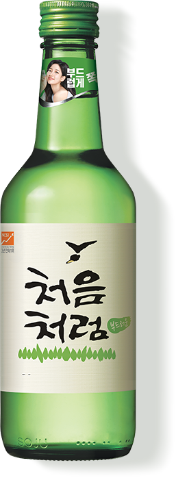

'처음처럼'이 국내에서 생산되는 비율
-
롯데주류 국내 사업장 수
-
롯데주류 국내 거래처 수
처음처럼은 롯데주류의 강릉, 청주, 군산 3개 공장에서 전량 제조·생산되며,
전국 21개 직매장과 52개 영업지점, 6만개 이상 거래처에서 활발히 유통·판매되고 있습니다.
*2018.12기준
롯데칠성음료 지분구조
기타주주
국민연금공단
해외투자자 및
일반투자자
롯데지주(주)
롯데알미늄(주)
(재)롯데장학재단
(주)호텔롯데
(주)롯데홀딩스
특수관계인
처음처럼을 제조하는 롯데주류가 속한 롯데칠성음료(주)는 1975년 국내 증시에 상장한 대한민국 기업으로
수입맥주 판매 법인인 '롯데아사히주류'는 별도의 법인입니다.'
*2019년 2/4분기 DART 공시, 단일 보통주 기준
 직접 고용으로 창출된 국내 일자리 수
직접 고용으로 창출된 국내 일자리 수 제조, 유통, 영업 등을 통해 창출된 국내 일자리 수
제조, 유통, 영업 등을 통해 창출된 국내 일자리 수 협력업체를 통해 창출된 국내 일자리 수
협력업체를 통해 창출된 국내 일자리 수